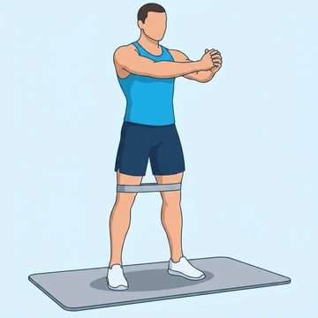

Banded Squat
A bodyweight squat with a loop band above the knees to teach knees-out tracking.
Upper legs · Loop Band · Beginner


Muscles worked by the Banded Squat
Primary
Secondary
Also called: glute, glutes, gluteus maximus, buttocks, butt, quad.
Equipment
Also called: mini band, hip band, booty band, fabric band, glute band, mini loop band.
How to do the Banded Squat
- Place a loop band just above the knees.
- Stand with feet shoulder-width apart, toes slightly out.
- Push the knees out against the band as you squat down.
- Descend until thighs are parallel or below.
- Drive through the heels to stand back up.
Form tips
- Push the knees out against the band the whole rep.
- Keep the chest up and the back flat.
- Do not let the knees collapse inward.
At a glance
| Body part | Upper legs |
|---|---|
| Category | Strength |
| Force type | Push |
| Mechanic | Compound |
| Difficulty | Beginner |
| Equipment | Loop Band |
| Goals | Hypertrophy |
| Tags | Leg day |
| MET | 6.0 (metabolic equivalent, for calorie estimates) |
| Unilateral | No |
| Bodyweight | No |
| Dataset id | banded-squat |
Banded Squat in German & Spanish
| German | Banded Squat |
|---|---|
| Spanish | Sentadilla con Banda |
Descriptions, instructions and tips ship in all three languages in the JSON.
Related exercises
Exercise data (JSON)
The record below is exactly what exercises.json ships for this exercise — names, descriptions, instructions and tips in English, German and Spanish.
{
"id": "banded-squat",
"name_en": "Banded Squat",
"name_de": "Banded Squat",
"name_es": "Sentadilla con Banda",
"description_en": "A bodyweight squat with a loop band above the knees to teach knees-out tracking.",
"description_de": "Eine Kniebeuge mit Loop-Band über den Knien, um die Knie-nach-außen-Spur zu lehren.",
"description_es": "Una sentadilla con peso corporal y banda sobre las rodillas para enseñar a sacar las rodillas afuera.",
"category": "strength",
"force_type": "push",
"mechanic": "compound",
"difficulty": "beginner",
"equipment": "loop_band",
"body_part": "upper_legs",
"primary_muscles": [
"gluteus_maximus",
"quadriceps"
],
"secondary_muscles": [
"gluteus_medius",
"hamstrings"
],
"goals": [
"hypertrophy"
],
"tags": [
"leg_day"
],
"variation_group": "squat",
"is_unilateral": false,
"is_bodyweight": false,
"instructions_en": [
"Place a loop band just above the knees.",
"Stand with feet shoulder-width apart, toes slightly out.",
"Push the knees out against the band as you squat down.",
"Descend until thighs are parallel or below.",
"Drive through the heels to stand back up."
],
"instructions_de": [
"Lege ein Loop-Band knapp über die Knie.",
"Stelle die Füße schulterbreit auf, Zehen leicht nach außen.",
"Drücke die Knie beim Absteigen gegen das Band nach außen.",
"Senke ab, bis die Oberschenkel parallel oder tiefer sind.",
"Drücke über die Fersen wieder hoch."
],
"instructions_es": [
"Coloca una banda elástica justo sobre las rodillas.",
"Pies a la anchura de los hombros, puntas ligeramente afuera.",
"Empuja las rodillas hacia afuera contra la banda al bajar.",
"Desciende hasta que los muslos queden paralelos o más abajo.",
"Empuja con los talones para volver a subir."
],
"tips_en": [
"Push the knees out against the band the whole rep.",
"Keep the chest up and the back flat.",
"Do not let the knees collapse inward."
],
"tips_de": [
"Drücke die Knie die ganze Wiederholung gegen das Band.",
"Brust offen, Rücken gerade halten.",
"Lasse die Knie nicht nach innen kippen."
],
"tips_es": [
"Empuja las rodillas contra la banda durante toda la repetición.",
"Pecho arriba y espalda recta.",
"No dejes que las rodillas se vayan hacia adentro."
],
"met": 6.0,
"images": {
"flat": {
"start": "images/flat/banded-squat-start.webp",
"peak": "images/flat/banded-squat-peak.webp"
}
}
}Fetch just this exercise
const { exercises } = await fetch(
"https://exercise-dataset.com/exercises.json"
).then(r => r.json());
const ex = exercises.find(e => e.id === "banded-squat");Free for personal and commercial in-app use with attribution (“Exercise data by RepDB”) — see the license and ready-made attribution snippets. Redistributing the data as a dataset or API is not permitted.